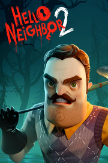

 |
|
| Tiempo de juego | No Jugado |
| Última actividad | Nunca |
| Añadido | 18/11/2025 14:21:35 |
| Modificado | 18/11/2025 14:22:05 |
| Estado de finalización | Not Played |
| Librería | Playnite |
| Fuente | 2TB GAS |
| Plataforma | PC (Windows) |
| Fecha de lanzamiento | |
| Puntuación de la Comunidad | 76 |
| Puntuación de la Crítica | |
| Puntuación de usuario | |
| Género | Aventura Estrategia Indie |
| Desarrollador | Eerie Guest tinyBuild |
| Editor | tinyBuild |
| Característica | Logros De Préstamo Familiar Un Jugador |
| Enlaces | Punto de encuentro Discusiones Guías Noticias Página de la tienda PCGamingWiki Logros |
| Tag | Acción Acción y aventura Ambientales Aventura Buena trama Coloridos Divertidos Inteligencia artificial Oscuros Para toda la familia Parkour Primera persona Puzles Sandbox Sigilo Supervivencia / Terror Suspense Terror Terror psicológico Un jugador |